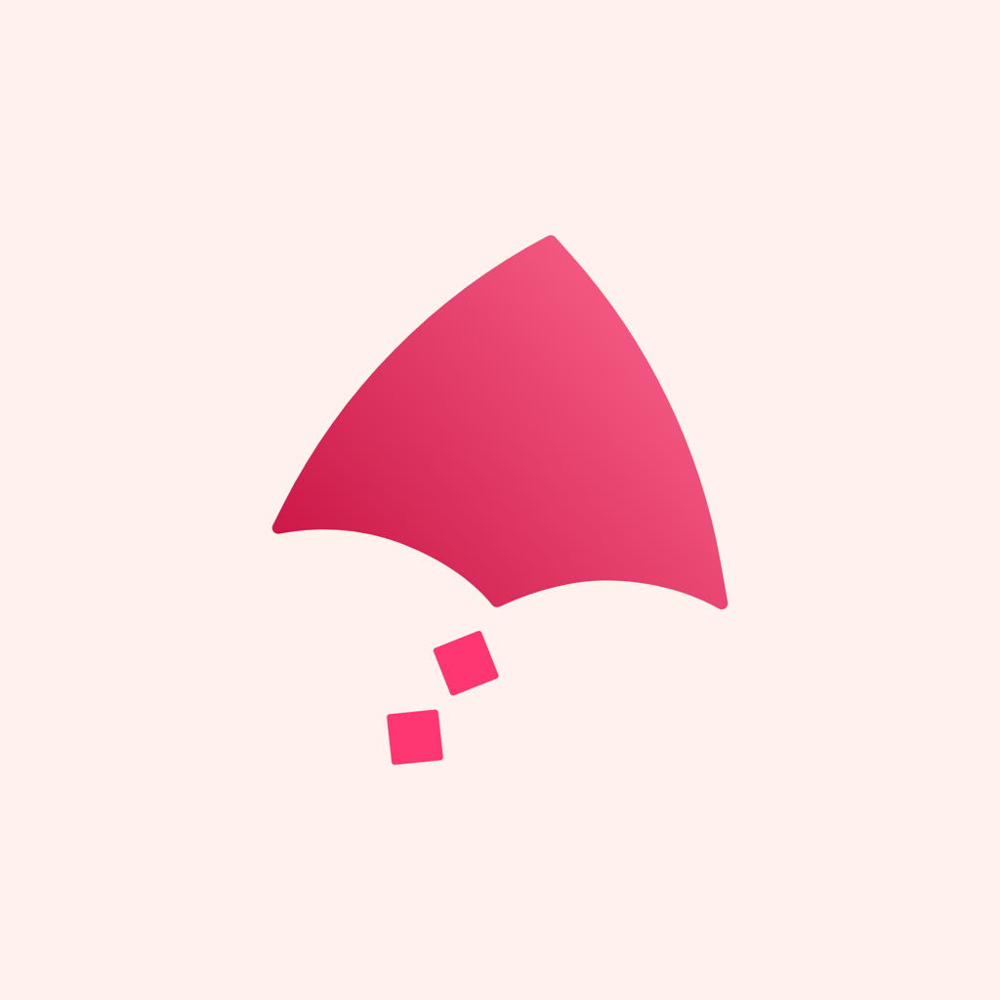

Motion-5 · actual Grok Bot story
One request → visible work

Kite / core workflowActual run · 23 September 2026Make a short Kite.ai launch video showing release notes becoming a draft launch page, then improving through feedback.
Standing instructions supply research, shot routing, review, assembly and delivery checks.
Example sentence chosen by the agent for this run. No Phase 2 movement research.
Open the brief ↗One request → visible work
Physical opening → exact UI
Focus on one readable interaction
Actual general library: /Users/joydimapilis/Desktop/untitled folder/Startup Launch Videos · 11 files; 3 selected. Chronological decoded samples and closer joins reviewed. General reference gate passed.
Review findings ↗ · Source inventory ↗| Time | Purpose | Visual |
|---|---|---|
| 0–4s | Physical metaphor for notes gaining direction | Generated still life |
| 4–10s | Show the input and send | Authored UI / text |
| 10–20s | Open a useful draft | Authored UI / text |
| 20–26s | Visible feedback changes same draft | Authored UI / text |
| 26–30s | End with work visible and CTA | Authored UI / text |
The same fictional Relay release carries through the request, draft and revision.
Detailed shot plan ↗Kling 3 Pro · Fal · silent T2V
One 5-second candidate, then review. Estimated $0.56; $0.65 reserved.
HyperFrames · HTML / CSS / GSAP
Exact copy, interaction states, timing, brand and final CTA.
No compatible paper T2V endorsement existed before the test. A provider default was not treated as a universal routing rule.
Routing evidence ↗ · Exact prompt and settings ↗One paid take. Whole 5s sampled chronologically; first 4s used. No paid rejection or retry.


kite_core_paper_v1
selected → compatible future product-shot evidence.
One subjective reviewed sample gives a provisional recommendation, not a universal best-model claim.
# Reverse engineering — Kite — From notes to next Video: `kite-core-demo.mp4` SHA-256: `4ec8df9dfe286b6f25120e347d8e2f38d6af653ce8bd0c9869b727cb31e56e55` ## Structure
Structure · exact prompts · models/methods · routing · revisions · failures · learnings
Individual reverse-engineering MD ↗Video is incomplete: required document missing: artifacts/final_outcome/kite-core-demo/kite-core-demo.reverse-engineering.md
Passed: individual file, required sections and matching video SHA-256.
The completed delivery manifest includes this document’s path and hash. A combined project report does not satisfy the gate.
Full demo log ↗ · Timed speaking notes ↗ · Tooling intervention ↗